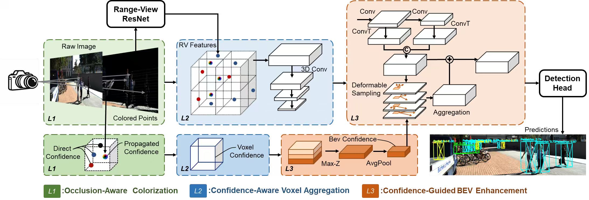

SEEKING PHD OPPORTUNITIES · 2027
Wenkai Zhu
Towards reliable
3D perception.
I am a master’s candidate at Southeast University, working on reliability-aware multimodal perception for autonomous systems.
My research asks how sensor fusion can remain reliable when observations are imperfect—from occlusion in LiDAR–camera fusion to depth uncertainty in stereo vision.
RESEARCH IN FOCUSBMVC 2026 · ACCEPTED
Perception beyond a single sensor.HC-MVMM · LiDAR–camera 3D object detection
RESEARCH INTERESTS3D visionMultisensor fusionReliability modellingAutonomous systems
01 / RESEARCH
Selected research
Occlusion awareness, structured confidence
and reliable 3D detection.
BMVC 2026 Accepted
HC-MVMM
Occlusion-Aware Hierarchical Confidence Modeling for LiDAR-Camera 3D Object Detection
Wenkai Zhu, Keke Geng, Zhichao Liu, Hansen Wang
Front-surface colouring and point–voxel–BEV confidence propagation reduce occlusion-induced colour contamination when fusing image evidence with LiDAR geometry.
Explore the code ↗
METHOD OVERVIEW ↗
MANUSCRIPT
In preparation
RCHead: Reliability-Calibrated Ranking and Refinement for Center-Based 3D Object Detection
Wenkai Zhu, et al.
Jointly modelling IoU quality and structured reliability for score calibration and residual box refinement.
PATENT APPLICATION
Published · CN122618234A
Method and System for LiDAR-Camera 3D Object Detection Guided by Occlusion Awareness and Hierarchical Confidence
Keke Geng, Wenkai Zhu, Guodong Yin
Chinese invention patent application; second inventor.
02 / EXPERIENCE
From methods to systems
Research informed by sensor data collection,
real vehicle platforms and deployment.
01JAN 2024 – DEC 2026 · PROJECT TERM
Roadside Multimodal Perception
Core Developer
Yangtze River Delta Science and Technology Innovation Joint Project
Led LiDAR–camera 3D detection research and deployment, producing HC-MVMM and the RCHead manuscript. Integrated radar for target association, state estimation and tracking, and built a UDP vehicle–infrastructure prototype.
Sensor fusion3D detectionTracking
02JUL 2025 – PRESENT
Stereo Road Preview System
Core Developer
Xiamen King Long Motor Group collaboration
Built synchronized ground-truth collection with dual industrial cameras and two LiDAR sensors. Developed HITNet stereo depth, pseudo-point-cloud reconstruction, road-elevation estimation and depth-gated 3D tracking with ROS/RViz.
~15 FPSJetson Orin deployment
03FEB – JUN 2025
FMCW LiDAR-Based AEB Perception
Core Algorithm Developer
Skywell New Energy Vehicles Group collaboration
Developed velocity-aware point-cloud preprocessing, clustering, association and motion prediction. Optimized grid-based clustering and velocity-preserving downsampling.
~50 msEnd-to-end latency
OCT 2024 – NOV 2025Human-AI Authority Allocation
Algorithm & Software Developer
C++ neural-network model, UI and UDP integration with a cockpit task-network simulator. Collaboration with China Aeronautical Radio Electronics Research Institute.
FEB – APR 2025Multi-Platform Remote Sensing
Proposal Contributor
Contributed to a UAV–satellite–cloud sensing proposal covering multi-source detection, robust features, temporal change detection and lightweight models.
03 / BACKGROUNDEducation
SEP 2024 – JUN 2027 · EXPECTEDSoutheast University
Professional master’s candidate · Machinery
School of Mechanical Engineering
Department of Vehicle Engineering
Advisors: Prof. Guodong Yin and Assoc. Prof. Keke Geng
SEP 2020 – JUN 2024China University of Mining and Technology
Bachelor’s degree · Mechanical Engineering
School of Mechatronic Engineering
Technical toolkit
METHODS
Multisensor fusion · Reliability modelling · Stereo depth · Point-cloud processing · Multi-object tracking
TOOLS & DEPLOYMENT
Python · C++ · PyTorch · OpenCV · PCL · Linux/CUDA · ROS/ROS2 · RViz · Git · Jetson
Selected honours
2025Southeast University Second-Class Graduate Scholarship
2024National Third Prize, 19th National Student Intelligent Car Competition
Outdoor 5G Remote-Driving Autonomous Vehicle